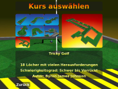
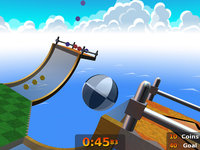
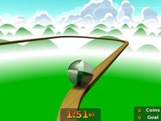

Neverball
Dieser Artikel wurde für die folgenden Ubuntu-Versionen getestet:
Ubuntu 14.04 Trusty Tahr
Zum Verständnis dieses Artikels sind folgende Seiten hilfreich:
Neverball  ist ein freies 3D-Geschicklichkeitsspiel mit einem simplen Spielprinzip: Man muss mit einem Ball alle Münzen einsammeln, um das Ziel freizuschalten. Das Besondere dabei ist, dass man nicht den Ball, sondern den Boden steuert. Die frustrierende Physik, die komischsten Hindernisse und die zahlreichen Levels garantieren hohen Spielspaß. Vor allem aber der z.T. hohe Schwierigkeitsgrad der Levels bringt so manch einen zur Weißglut. Neverball bringt außerdem das Minigolf-Spiel Neverputt mit, das auf der gleichen Engine aufbaut (dieser Artikel gilt auch für Neverputt).
ist ein freies 3D-Geschicklichkeitsspiel mit einem simplen Spielprinzip: Man muss mit einem Ball alle Münzen einsammeln, um das Ziel freizuschalten. Das Besondere dabei ist, dass man nicht den Ball, sondern den Boden steuert. Die frustrierende Physik, die komischsten Hindernisse und die zahlreichen Levels garantieren hohen Spielspaß. Vor allem aber der z.T. hohe Schwierigkeitsgrad der Levels bringt so manch einen zur Weißglut. Neverball bringt außerdem das Minigolf-Spiel Neverputt mit, das auf der gleichen Engine aufbaut (dieser Artikel gilt auch für Neverputt).
|  |  |  |
| Neverputt | Medium Set: Level 8 | Retour de force: Level 20 |
Installation¶
Man kann sich Neverball entweder aus den Paketquellen [1] installieren, oder aber selbst kompilieren. Die zweite Variante ist zu empfehlen, da man dann die aktuellste Version des Spiels hat. Das Kompilieren ist auch nicht weiter schwierig.
Paketquellen¶
Um das Programm aus den Paketquellen zu beziehen, einfach dieses Paket installieren:[1]
neverball (universe)
neverputt (universe)
 mit apturl
mit apturl
Paketliste zum Kopieren:
sudo apt-get install neverball neverputt
sudo aptitude install neverball neverputt
Man findet die beiden dann im Menü unter "Anwendungen -> Spiele".
Selbst kompilieren¶
Um das Programm selbst zu kompilieren, muss man zuerst die Entwicklungsdateien der Abhängigkeiten installieren:[3]
Befehl zum Installieren der Build-Abhängigkeiten:
sudo apt-get build-dep neverball
sudo aptitude build-depends neverball
Dann lädt man sich hier den neuesten Quelltext herunter ("Source"). Diesen muss man nur entpacken [2] und im Terminal [3] den Befehl
make
eingeben. Je nach Prozessor kann das Kompilieren eine Weile dauern. Danach muss man nur die Datei neverball bzw. neverputt im Quelltext-Ordner anklicken, um das Spiel zu starten.
Wer möchte, kann sich noch einen Menüeintrag anlegen [4]. Als Symbol kann man die Bildchen im Ordner dist verwenden.
Zum Spiel¶
Man muss den Ball vor Ablauf der Zeit in das Ziel rollen lassen, welches durch das Einsammeln einer bestimmten Anzahl an Münzen freigeschaltet wird. Gelbe Münzen bringen einen Punkt, rote 5 und blaue 10.
Es gibt mehrere sogenannte "Level-Sets", die sich in der Schwierigkeit unterscheiden. Man muss die Levels in einem Level-Set nacheinander durchspielen, um das nächste Level freizuschalten. Außerdem gibt es seit Version 1.5 einen "Challenge"-Modus, in dem man zusätzliche Bonus-Level freischalten kann.
Neverputt ist ein simples Minigolf-Spiel, das sich auf Grund der bereits vorhandenen Engine von Neverball leicht entwickeln ließ.
Die Spiele steuert man wie folgt:
| Steuerung | |||
| Allgemein | |||
| F9 | Bilder pro Sekunde anzeigen | Esc | Menü |
| Neverball | |||
 oder oder  | Kamera drehen | oder +
⇧ | Kamera schnell drehen |
| F1 | Kameramodus: Verfolgen (Standard) | F2 | Kameramodus: Faul (wie "Verfolgen", nur langsamer) |
| F3 | Kameramodus: Manuell (Kamera kann nur noch über Maustasten gesteuert werden) | F6 | Münzen-Anzeige etc. ein- / ausblenden |
| Neverputt | |||
| | Ball schlagen | ||
Benutzerdefinierte Levels¶
Man kann benutzerdefinierte Levels, die man sich heruntergeladen hat, in das Spiel einbinden (eine Anleitung, wie man solche Levels selbst erstellt, findet sich weiter unten). Man muss aber darauf achten, dass die Levels für die Version des Spiels gemacht wurden, die man auch besitzt.
Hier eine kleine Auflistung interessanter Level-Sets für Neverball:
| Level-Sets | |||||
| Name | Level-Anzahl | Schwierigkeit | Autor | Version | Link |
| Freestyle Training Course | 8 | Mittel bis schwer | Dave | 1.5.* | Klick  |
| Bud's Levels | 8 | Mittel bis extrem schwer | Bud | 1.5.* | Klick |
| DotSec Levels | 5 | Mittel | albeu | 1.5.* | Klick |
Um ein solches Level zu installieren, entpackt man das heruntergeladene Archiv und verschiebt die Dateien in den jeweiligen data-Ordner. Der data-Pfad von Neverball variiert, je nachdem, wie es installiert wurde. Bei einer Installation über die Paketquellen ist dieser in /usr/share/games/neverball/data, bei einer manuellen Installation im Unterordner data des Installationsordners. Jetzt muss man noch in die Datei sets.txt eine neue Zeile mit dem Namen der set-XXX.txt, die im Archiv enthalten war, einfügen. Gegebenenfalls benötigt man hierfür Administratorrechte [5].
Für Neverputt-Levels (auch "Kurse" genannt) gilt das gleiche, allerdings heißen hier die entsprechenden Dateien course-XXX.txt und courses.txt.
Replays¶
Neverball (nicht Neverputt) verfügt über eine Replay-Funktion. Wenn man einen Level geschafft hat, kann man das Replay speichern lassen und sich im Hauptmenü unter "Replays" angucken.
Auf der Seite nevercorner.net findet man eine Art "Hall of Fame" mit den verschiedensten Replays, diese liegen als .nbr-Datei vor. Um diese abzuspielen, startet man Neverball mit diesem Befehl [3]:
neverball -r <Replay-Datei>
Man kann auch den .nbr-Dateityp mit Neverball verknüpfen, sodass Replays sich mit einem einfachen Doppelklick öffnen lassen. Unter Ubuntu wählt man dazu "Datei -> Eigenschaften -> Öffnen mit" und trägt neverball -r als benutzerdefinierten Befehl ein.
Eigene Levels erstellen¶
Mit dem Programm gtkRadiant kann man sich eigene Neverball- und Neverputt-Levels erstellen. Eine Anleitung dazu kann im nevercorner.net-Wiki oder auch unter icculus.org gefunden werden.

Infobox¶
| Neverball | |
| Genre: | Geschicklichkeit |
| Sprache: |  |
| Veröffentlichung: | 2005+ |
| Entwickler: | Neverball Team |
| Systemvoraussetzungen: | Prozessor mit mind. 500 Mhz, 3D-beschleunigte OpenGL-Grafikkarte |
| Medien: | Download |
| Läuft mit: | nativ |
- Erstellt mit Inyoka
-
 2004 – 2017 ubuntuusers.de • Einige Rechte vorbehalten
2004 – 2017 ubuntuusers.de • Einige Rechte vorbehalten
Lizenz • Kontakt • Datenschutz • Impressum • Serverstatus -
Serverhousing gespendet von